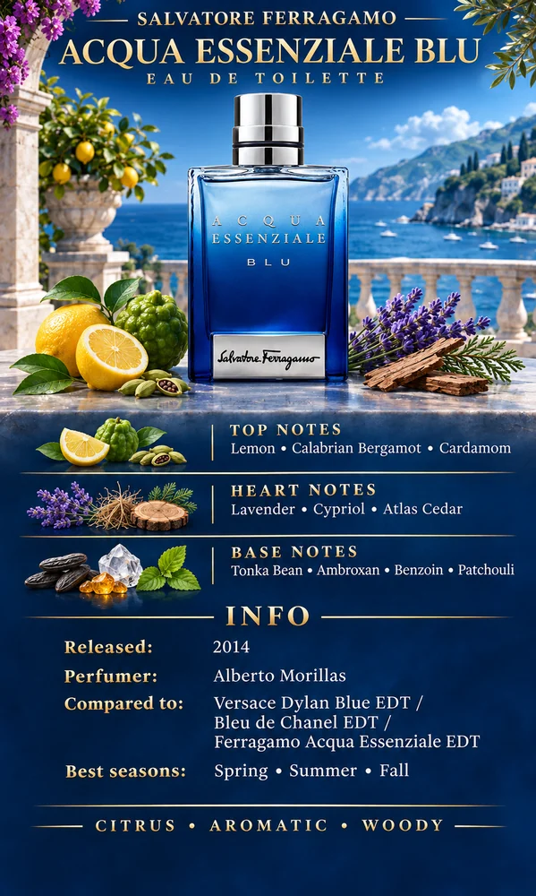

Salvatore Ferragamo
Acqua Essenziale Blu Eau de Toilette
β Beta Designer · Eau de Toilette · 2014 In collection
Randy's rating8.25/10
Public rating8/10
Overall R20.32/25
Normalized N0.813
R = 8.25 × 1.3 + 8 × 1.2 = 20.32 of 25 · N = 20.32 ÷ 25 = 0.813 How scores work
Notes
Top notes
- lemon
- Calabrian bergamot
- cardamom
Heart notes
- lavender
- cypriol
- Atlas cedar
Base notes
- tonka bean
- ambroxan
- benzoin
- patchouli
Details
| House | Salvatore Ferragamo |
|---|---|
| Type | Designer · β Beta |
| Concentration | Eau de Toilette |
| Released | 2014 |
| Perfumer | Alberto Morillas |
| Scent family | Woody, Amber & Resin, Citrus |
| Best seasons | Spring, Summer, Fall |
| Similar to | Versace Pour Homme Dylan Blue EDT Bleu de Chanel Eau de Toilette Salvatore Ferragamo Acqua Essenziale EDT |
Sources
Fragrantica 4.15/5 (about 8.3/10) from 1,916 votes; Parfumo 7.4/10 from 210 ratings. Sweet aquatic-amber blue; rounded to 8. Checked 2026-11-06.
Other Suggestions
-
 Salvatore FerragamoUomo Signature Eau de ParfumRandy7.5Public 8N 0.774
Salvatore FerragamoUomo Signature Eau de ParfumRandy7.5Public 8N 0.774 -
 Salvatore FerragamoF by Ferragamo Pour Homme Eau de ToiletteRandy6.5Public 8N 0.722
Salvatore FerragamoF by Ferragamo Pour Homme Eau de ToiletteRandy6.5Public 8N 0.722 -
 ChanelBleu de Chanel ParfumRandy9.5Public 9N 0.926
ChanelBleu de Chanel ParfumRandy9.5Public 9N 0.926 -
 CreedWild VetiverRandy9.5Public 8N 0.880
CreedWild VetiverRandy9.5Public 8N 0.880 -
 ByredoBal d'Afrique Absolu de ParfumRandy9.5Public 9N 0.927
ByredoBal d'Afrique Absolu de ParfumRandy9.5Public 9N 0.927